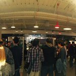
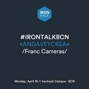
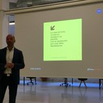
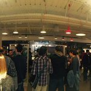
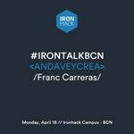
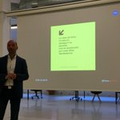
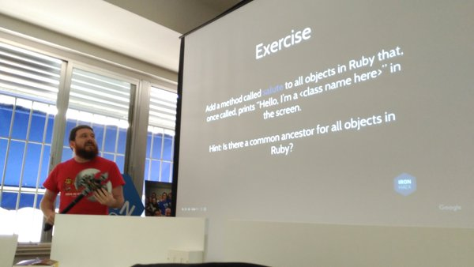

- Inicio
- Sobre nosotros
- ¿Tienes cuenta?
- Iniciar sesion


@ironhack
Ironhack is an international coding bootcamp that believes the best way to learn how to do something, is by actually doing it.
Madrid, Barcelona & Miami
ironhack.com
Se unió en junio de 2013
675 fotos y videos
 


En respuesta a rufodelarosa



En respuesta a rufodelarosa
Ironhack @ironhack 2 h
Temblad @seedtag, que @rufodelarosa con uno de nuestros #bootcamp se haría CTO en un par de meses ;) #RufoIronhacker #tambientedamoscamiseta
Ricardo Boluda @rixido 30 min
NODE.JS & EXPRESS.JS – IRONTALK by @santihbc Co-founder & CTO of @EDpuzzle Join now! http://bit.ly/1QpkCIo #tech
 Gonzalo Manrique
@gonzumanrique
Ariel Quinones
@arielquinones